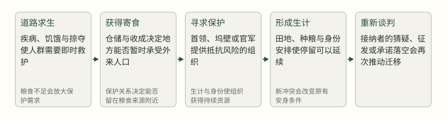
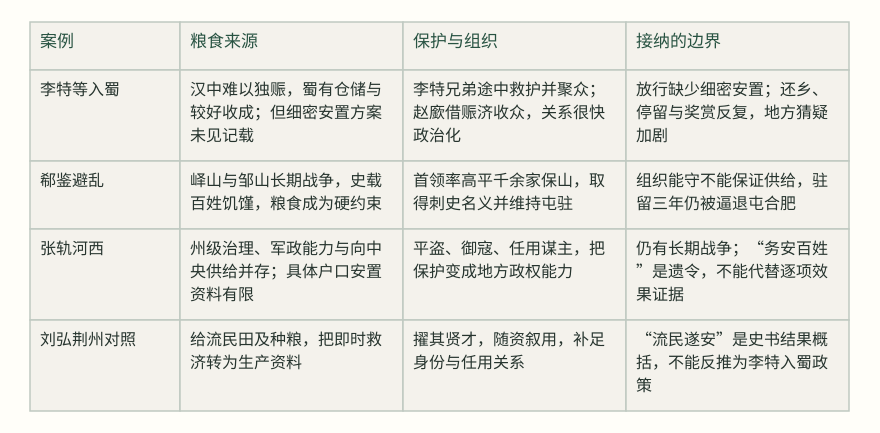

元康八年，流民到了汉中，请求到巴、蜀寄食；朝廷起初不准，还派侍御史李芯前来慰劳并监察。李芯面对的具体困境是：汉中一郡养不起十万余口，若继续留置，粮食与疾病的压力会堆在同一个地方；若放他们入蜀，又没有现成的安置秩序。于是他上表说“蜀有仓储，人复丰稔，宜令就食”，朝廷才同意放行。这个决定让我们先看到迁徙真正的起点：谁有粮，谁承担风险，谁能决定人群下一步往哪里走。[1]
流民十万余口，非汉中一郡所能振赡；蜀有仓储，人复丰稔，宜令就食。
侍御史李芯表／《通鉴》卷八十二，晋惠帝元康八年条 · [1]
先把“活下来”拆开：粮食、保护与组织
李芯的表文把最现实的一层说得很清楚：汉中一个郡养不起十万余口，而蜀有仓储、收成较好，于是朝廷允许流民前往。这个决定并不等于朝廷已经设计好安置方案。记载只说他们“散在梁、益，不可禁止”，说明许可打开了方向，却没有给出足以控制流动的编户、分配与护送安排。李特兄弟在道路上“营护振救”，因此取得人心；这首先是流民在危险途中对保护的回应，不能直接等同于他们已经形成一个统一的政治集团。[1]
粮食、保护、组织彼此相连，却不能互相替代。只有粮食，外来者可能进来，却未必有办法抵抗掠夺；只有武力，队伍可能暂时安全，却会因无粮而瓦解；只有一个首领的号召，若没有可分配的物资和可预期的保护，也很难把众人留在一起。迁徙者的选择，往往是在三者都不充分时做出的折中。[2]
安身条件如何逐步变化：从寄食到地方秩序


李特入蜀：被允许寄食，不等于被安置
元康八年，关中因齐万年反叛而连年饥荒，略阳、天水等地民众向汉川就粮，数万家流移。编年史的叙述同时留下两种力量：一路上，李特兄弟救护疾病穷乏者；到了汉中，流民请到巴、蜀寄食，朝议原本不准，侍御史李芯却以蜀地仓储和收成为理由上表，朝廷随后同意。这里有一个容易被忽略的次序：李特先在危途中积累了护卫者的信任，朝廷后来才在粮食压力下放行。放行是行政决定，不能倒推为李特已经被正式任命为流民的代表。[1]
“散在梁、益，不可禁止”还透露出另一层缺口。人群被允许进入，却没有被记载为按照明确地点、粮额和防护责任安置。迁徙从集中请求变成分散停留，解决了汉中一地的即时负担，也把管理难题转移给梁、益各地。对流民而言，寄食有了入口，却没有稳定的出口：下一季粮食、地方官府态度和道路安全都仍未确定。[2]
两年后，益州刺史赵廞担心被征召，倾仓赈流民，以收众心；他又厚待李特兄弟，试图把有武力、有声望的人纳入自己的阵营。赈济由此改变了性质：它不只是救急，也成了地方政治的资源。李特等“凭恃廞势，专聚众为盗”，这是《通鉴》的判断和记载；不能据此把所有流民都写成盗匪，更不能把后来李特的冲突说成在初入蜀时就已注定。蜀人、流民、刺史及其属官之间的互相利用，才使局面逐渐从寄食问题变成权力问题。[3]
益州刺史耿滕的密表提出让流民还本居，担心“秦、雍之祸更移于梁、益”。这句话既反映地方官对外来武装的恐惧，也反映出政策没有把“回去”当作可行选项来评估：关中仍在动荡，返回意味着再次面对原来的饥荒和战争。李特的兄长从略阳到蜀后认为“中国方乱，不足复还”，李特赞同，并请求暂时停留；罗尚、冯该受赂后答应。材料能证明他们在局势和利益交织中争取停留，不能证明他们只有一种选择，也不能把受赂写成全部流民的行为。[5]
朝廷后来准备给参与讨赵廞的流民加封，广汉太守辛冉却扣下诏命、不据实上报，众人因此怨恨。这里出现了身份安排的断裂：人群已经承担了军事风险，奖赏却在地方官手中被截留；原本可能把外来者纳入秩序的承诺，反而成了新的不信任来源。李特随后与地方官冲突升级，不能只用“流民无家可归所以必然造反”解释。粮食、保护、组织之外，是否有可信的身份和报偿，也是安身能否持续的条件。[6]
郗鉴守峄山：避难者也要制造一块可守的地方
郗鉴的材料呈现的是另一种起点。他不是带着一个由朝廷安排的迁徙计划前往安全地，而是在邺城失守、兖州各有刺史的混乱中，“帅高平千余家避乱保峄山”。这里的“帅”说明他确实承担了组织者角色；“千余家”则是史料提供的规模。记载没有给普通避难者写个人经历，也没有说他们都出于同一意愿。可以确定的是，在地方官系统互相冲突、兖州吏民“不知所从”时，峄山成为一个人群能够依附的防护节点。[7]
郗鉴的安身方式首先是把人组织起来，再争取政治名义。琅邪王睿任命他为兖州刺史，刘琨所置的刘演、荀藩所置的李述与郗鉴各屯一处，官职与军队的并立并没有立即带来统一秩序。郗鉴拥有的不是一个被中央完整承认、粮道畅通的州，而是一支在山地和坞壁之间维持的力量。名义能带来谈判位置，不能自动带来粮食；组织能提供保护，不能自动结束战争。[7]
兖州刺史郗鉴在邹山三年，有众数万。战争不息，百姓饥馑，掘野鼠、蛰燕而食之，为后赵所逼，退屯合肥。
《通鉴》卷九十二，晋元帝永昌元年条 · [8]
后来的记载说郗鉴在邹山驻留三年，有众数万；这段卷九十二的编年记载把安身的代价写得很重：战争不息，百姓掘野鼠、蛰燕为食，最后因后赵逼迫而退屯合肥。人数增加不等于安定，甚至可能使粮食压力更大；山地的防护也不能代替稳定的供应线。郗鉴最终被征回朝廷，说明他的政治价值被重新评估，但这不是所有随行者都获得了安置的证明。对普通人而言，跟随一个有名望的首领，可能比独自逃亡安全，却仍可能在长期围逼中陷入饥饿。[8]
这个案例的贡献正在于它限制了“有组织就能安身”的说法。组织确实能把分散的逃难者变成可守、可谈判的群体；可是，若没有粮道和外部支援，组织也会把更多人集中到同一处，使饥饿集中爆发。郗鉴后来退屯合肥，既是保存力量的选择，也意味着放弃峄山原有的空间。史料没有给出他与每一户人家逐一协商的过程，文章不能替他补写这种对话；我们只能依据移动、饥馑和退屯这些行动，判断安身的条件已经恶化。[8]
张轨经营河西：接纳机制从救济变成地方治理
张轨与前两案不同。他以凉州刺史身份主动求出河西，心中“阴有保据河西之志”，面对的是盗贼纵横和鲜卑为寇的地方，而不是单纯接收一批已经到达的难民。这个动机由《通鉴》明载，不能拔高成纯粹为民请命；但他如何建立可持续秩序，确实能帮助我们理解“安身之地”怎样从一个避难点变成区域性治理。张轨任用宋配、泛瑗为谋主，平定州境盗贼，威名由此建立。安全在这里不是一句保护承诺，而是可被地方人群观察到的治安能力。[9][10]
材料还显示张轨与中央保持政治联系。京师饥匮时，他派遣参军送马五百匹、毯布三万匹；这条记载只证明他向中央供给物资，不能直接证明流民因此得到安置，也不能推断中央给河西以对等回报或本地资源因此改善。它能说明的是，河西政权仍在向中央履行供给义务。张轨遗令要求文武将佐“务安百姓”，是治理原则的自我表述；它能证明他留下了这一要求，不能单独证明每一项安民政策都有效。[11][12]
文武将佐，务安百姓，上思报国，下以宁家。
张轨遗令／《通鉴》卷八十九，晋怀帝建兴二年条 · [12]
张轨的成果也不能被写成一劳永逸。其家族“虽保据河右，而军旅之事无岁无之”，直到张骏继位、境内渐平，才出现民富兵强、远近称贤的局面。这里的因果需要谨慎：史文把局势改善与张骏的勤政、文武得用并叙，但并没有提供足以量化的粮仓、户籍或普通家庭迁徙记录。我们可以说，持续的行政与军事能力使河西逐渐成为较可预期的生活空间；不能说所有迁来者都因此获得同样的安全。[13]
三种接纳机制：寄食、避乱组织与区域治理


接纳与排斥，常常由同一套资源安排产生
三案放在一起，最值得注意的不是哪位首领更仁慈，而是接纳与排斥如何同时出现。蜀地仓储使流民得以进入，却也让地方官担心外来武装；赵廞用仓廪赈济收众，流民获得资源，却被纳入他的权力计划；耿滕建议还本居，是对地方秩序的保护性反应，但没有解决原居地仍在动荡的事实。接纳者越需要把人群编入自己的组织，迁徙者越可能获得保护，也越可能失去自主的停留条件。[3][5]
荆州刘弘的做法提供了一个有价值的对照。记载说当地有十余万户流民，羁旅贫乏，多为盗贼；刘弘“给其田及种粮”，又选拔贤才、按资叙用，于是“流民遂安”。这条材料支持的结论很具体：把外来人口从即时救济转入生产资料、身份和任用的安排，可能使停留更稳定。它不能证明只要给田就一定安定，也不能消除战争、地方利益和分配不均的风险。更不能把这条荆州经验反推为李特初入蜀时已经拥有相同政策。[4]
因此，评价一个“安置”方案，至少要分别问四件事：粮食是一次性赈给，还是有下一季的来源；保护是首领私人关系，还是可被多方承认的制度；人群是否获得土地、身份和可预期的报偿；如果关系破裂，是否存在安全退出的路径。只回答“有没有收留”，会把寄食、征用、军队招纳和地方治理混成一个词。[4]
迁徙的代价，不只在路上，也在到达之后
迁徙通常被理解为逃离危险，但史料中的代价至少有三层。第一是身体代价：李特材料明写道路上有疾病和穷乏，郗鉴材料写饥饿者掘野鼠、蛰燕；这些不是抽象的“颠沛”，而是决定人群是否还能保持组织的消耗。第二是关系代价：离开故乡意味着田地、坟墓、乡里保护和原有身份难以带走；郗鉴所率人群必须依靠新的首领和山地组织，李特等则要在地方官、蜀人和流民之间重新谈判。第三是政治代价：一旦外来人口被视为兵力、盗贼或某一势力的附属，停留就会带上新的义务和敌意。[1][3][8]
这也解释了为什么“回乡”常常不是简单的恢复原状。朝廷命令召还入蜀流民时，李特兄长认为中国正在动乱，不足复还；这是一条关于当时判断的信息，未必是完整事实，也不必然代表所有流民的意见。但它说明命令与可行性之间存在差距：如果原处没有粮食和安全，召回只是把风险转移回原地。政策若只处理人口位置、不处理造成迁徙的原因，往往无法让人真正返回。[5]
读这类史料，先看谁提供了什么，再谈“安定”
三案材料主要由首领、官员和史家叙述，普通迁徙者的声音极少。我们知道李特兄弟怎样救护、赵廞怎样赈济、郗鉴怎样率众、张轨怎样治州，却不知道每一户人家为何留下、何时离开，也不能把史书中的“民”“流民”当成意见一致的整体。面对这种材料，最稳妥的读法是把“人群行动”与“首领叙述”分开：记载了多少人、由谁率领、在哪里屯驻，是事实层；这支队伍代表谁、为何完全服从、是否都支持某个政治目标，则需要更弱、更有条件的推断。[7][8]
读者可以把每一条安置消息拆成一张小账：谁提供粮食，提供多久，谁负责防护，谁承担费用，外来者得到的是土地、户籍、官职还是临时口粮，方案失败后能否退出。这样做并不保证判断正确，因为核查本身会耽误时间，等待更完整的承诺也可能错过眼前的粮食；它只是让“这里似乎安全”变成几项可以继续追问的条件。古代首领面对的是战争和政权竞争，不能直接把他们的做法当成现代生活处方；能迁移的是观察次序，而不是行动命令。[4]
安身不是找到一处地名，而是找到能续上的关系
李特入蜀说明，粮食入口可以打开迁徙，却不自动提供稳定身份；郗鉴避乱说明，组织能把分散者变成可守的群体，却会受到粮道和战争的反复挤压；张轨河西说明，只有当保护被嵌入治安、任用和资源交换，安身才可能从临时聚集变成较长期的地方秩序。三案并不构成一条“从流民到国家”的进步路线，而是三种条件组合及其边界。[1][7][9]
所以，乱世中“靠什么活下来”的答案不是单独依靠粮食、武力或某位好首领，而是看三者能否在下一阶段继续接上：粮食能否转成生计，保护能否转成可预期的规则，组织能否在资源不足时纠错或退出。安身之地也因此总带着时间限制。若只看到一次赈济、一次胜仗或一个承诺，就把它称为安全，往往正好漏掉迁徙者最需要知道的下一步。[12][4]
来源与证据范围
- 卷82 · 公元298年条 · 本年段落4（正文 · 阅读原文）
关中荐饥，略阳、天水六郡民流移就谷入汉川者数万家，道路有疾病穷乏者，特兄弟常营护振救之，由是得众心。
支持：交代关中饥荒、流民入汉川、李特兄弟救护及朝廷准许就食蜀地的次序。
限制：记载由编年史和官员表文构成，不能据此还原普通家庭的具体选择；李芯受赂的背景也使其表文不能视为中性统计。 - 卷82 · 公元298年条 · 本年段落4（正文 · 阅读原文）
由是散在梁、益，不可禁止。
支持：支持获准入蜀后缺少集中安置、人员分散的事实。
限制：原文没有说明各地具体安置办法与人数分布。 - 卷83 · 公元300年条 · 本年段落31（正文 · 阅读原文）
乃倾仓廪，赈流民，以收众心。
支持：支持赵廞以赈济吸纳流民、并将粮食资源用于地方政治的事实。
限制：“以收众心”是史家叙述，不能证明所有受赈者接受其政治目标。 - 卷85 · 公元304年条 · 本年段落6（正文 · 阅读原文）
流民在荆州者十余万户，羁旅贫乏，多为盗贼，弘大给其田及种粮，擢其贤才，随资叙用，流民遂安。
支持：提供荆州给田、种粮、任用与安定的对照材料，说明救济转为生计和身份安排。
限制：“遂安”是编年史的结果概括；不能把该例直接套回李特入蜀或视为普遍规律。 - 卷84 · 公元301年条 · 本年段落38（正文 · 阅读原文）
言中国方乱，不足复还。特然之，累遣天水阎式诣罗尚求权停
支持：支持召还命令与返回可行性之间的冲突，以及李特等请求暂留。
限制：是李辅、李特一方的判断和行动，不能扩大为全部流民意见。 - 卷84 · 公元301年条 · 本年段落38（正文 · 阅读原文）
广汉太守辛冉欲以灭廞为己功，寝朝命，不以实上；众咸怨之。
支持：支持奖赏承诺在地方执行环节被截留、导致怨恨。
限制：“众”所指范围依上下文为参与讨赵廞者，不能泛指全部流民。 - 卷88 · 公元313年条 · 本年段落13（正文 · 阅读原文）
前中书侍郎郗鉴，少以清节著名，帅高平千余家避乱保峄山
支持：支持郗鉴率高平千余家避乱保山，并在多重州刺史并立中形成组织节点。
限制：材料没有普通避难者的个人叙述，也没有说明每户是否自愿或具体粮食分配。 - 卷92 · 公元322年条 · 本年段落45（正文 · 阅读原文）
战争不息，百姓饥馑，掘野鼠、蛰燕而食之，为后赵所逼，退屯合肥。
支持：支持郗鉴组织长期维持的粮食压力、后赵逼迫与退屯结果。
限制：记载把百姓置于整体叙述中，不能据此推断每个人都经历同样程度的饥饿。 - 卷84 · 公元301年条 · 本年段落1（正文 · 阅读原文）
轨以时方多难，阴有保据河西之志，故求为凉州。
支持：支持张轨主动求任凉州并有保据河西意图。
限制：这是对张轨政治动机的史家叙述，不能简化为单纯救民动机。 - 卷84 · 公元301年条 · 本年段落1（正文 · 阅读原文）
悉讨破之，威着西土。
支持：支持张轨以平盗御寇和任用谋主建立地方保护能力。
限制：“威着西土”是概括性评价，不能代替对普通居民安全状况的全面统计。 - 卷87 · 公元310年条 · 本年段落29（正文 · 阅读原文）
京师饥匮。轨遣参军杜勋戏马五百匹，毯布三万匹。
支持：支持张轨在京师饥匮时向中央输送马匹和毯布；用于说明地方政权与外部政治网络的资源交换。
限制：这是向中央供给物资的记载，不直接证明流民获得安置或生活改善。 - 卷89 · 公元314年条 · 本年段落20（正文 · 阅读原文）
文武将佐，务安百姓，上思报国，下以宁家。
支持：支持张轨遗令把安民作为文武将佐的治理要求。
限制：遗令是规范性要求，不能单独证明落实效果。 - 卷95 · 公元335年条 · 本年段落23（正文 · 阅读原文）
虽保据河右，而军旅之事无岁无之。及张骏嗣位，境内渐平。
支持：支持河西秩序并非一劳永逸，张骏继位后才出现较长期的平稳叙述。
限制：“渐平”“民富兵强”为史书概括，资料没有提供完整人口与迁徙统计。